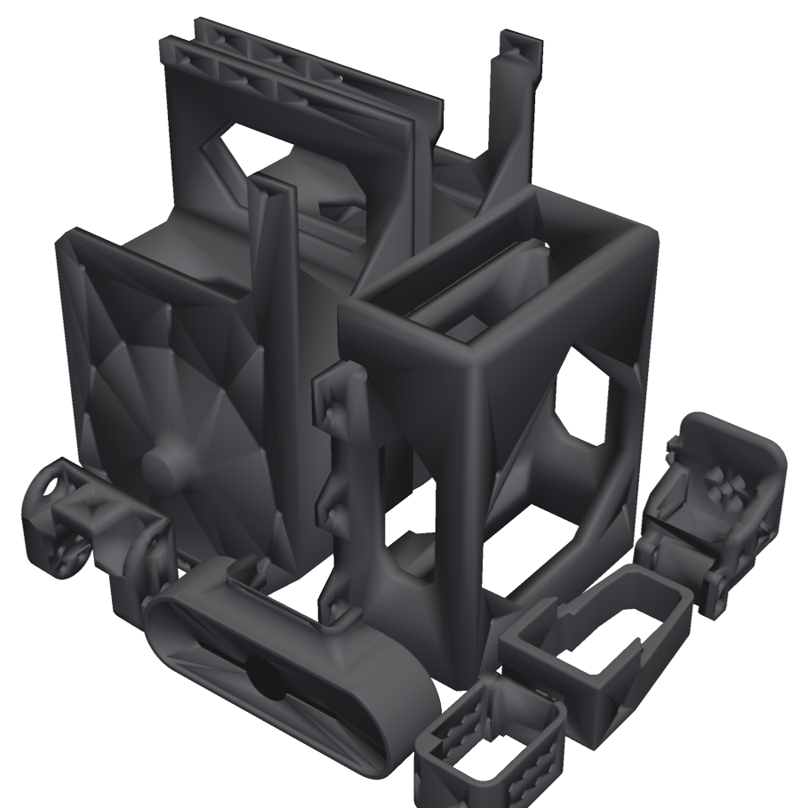
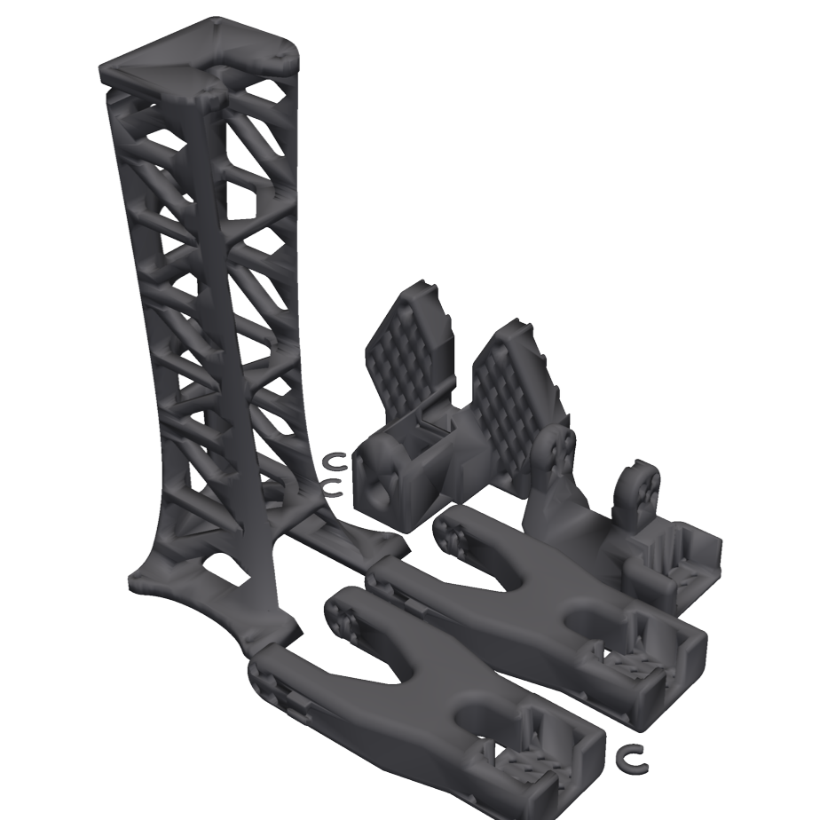
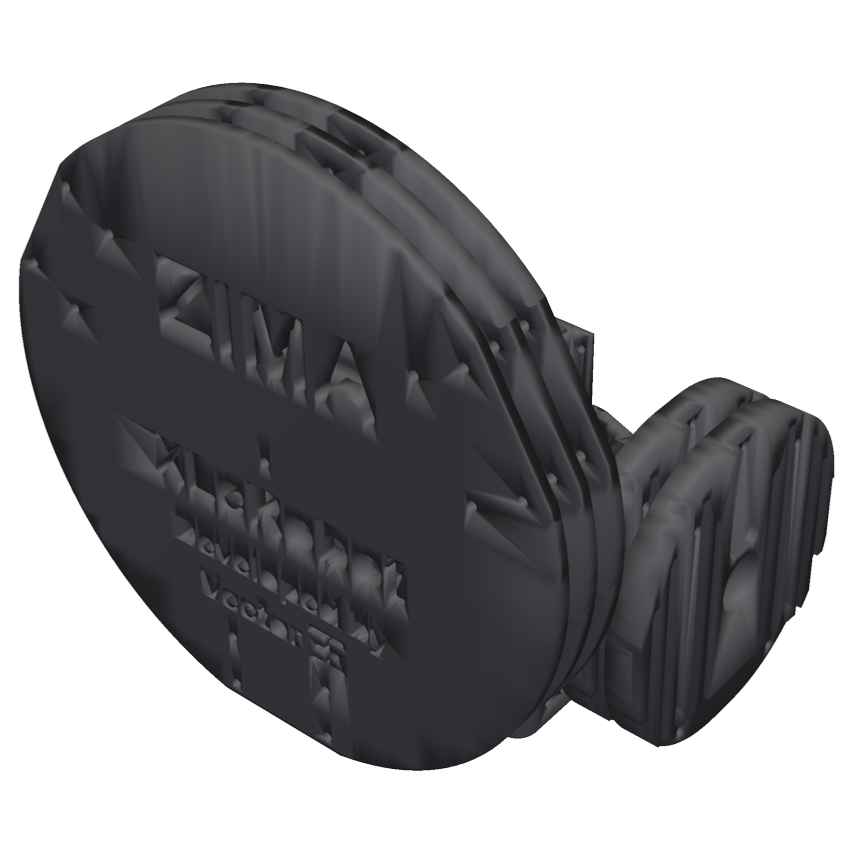
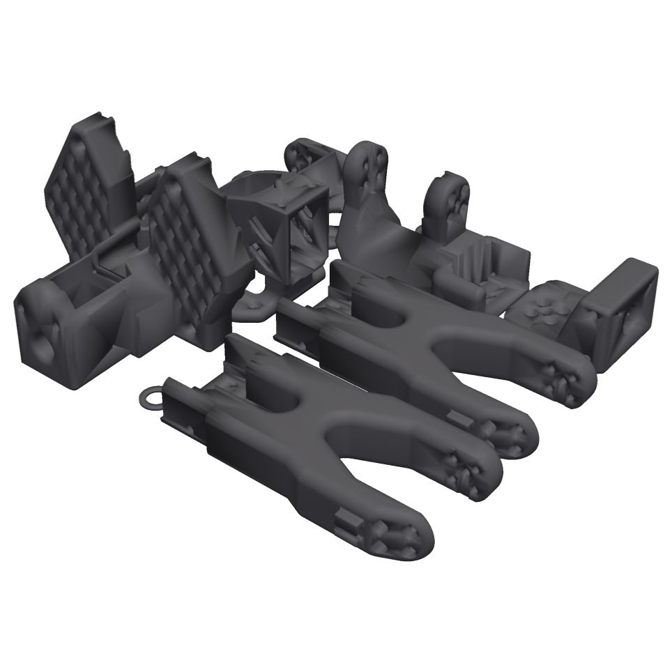
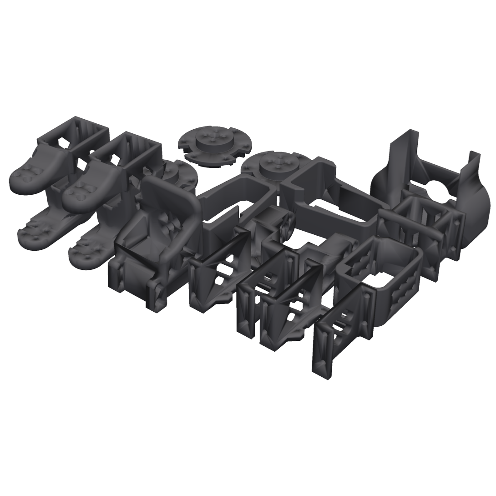
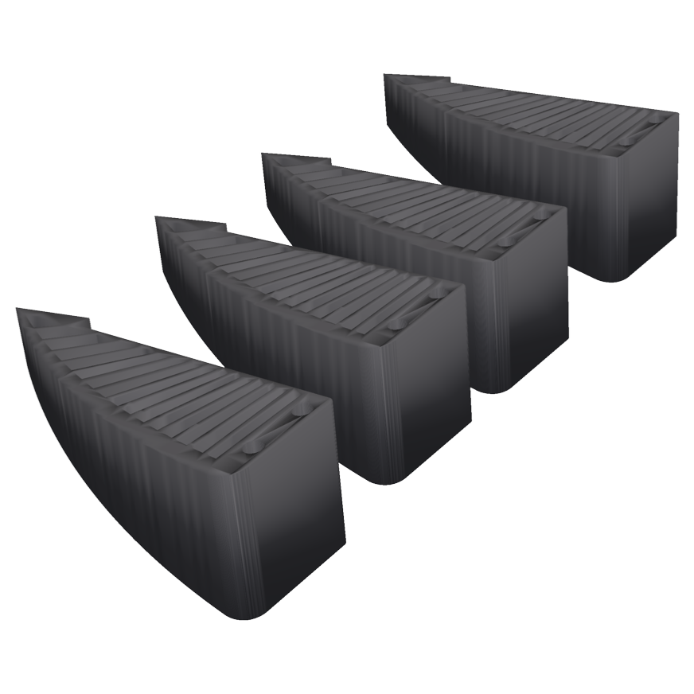

Hardware Components
The complete Bill of Materials (BOM), print files, and print settings.
Bill of Materials (BOM)
Full hardware requirements for the standalone configuration.
| Component | Qty | Cost (USD) |
|---|---|---|
| NVIDIA Jetson Orin Nano Super | 1 | $249.00 |
| microSD Card | 1 | $11.23 |
| Anker 4-in-1 USB-C Hub | 1 | $14.99 |
| Feetech STS3215 Servos (12 V, ST-3215-C018) | 17 | $271.83 |
| Servo Wire: 50’ 3-Color | 1 | $15.97 |
| Waveshare Serial Bus Servo Driver Board | 2 | $21.10 |
| Anker SOLIX C300 DC Power Station | 1 | $159.99 |
| PLA Filament (3kg) | 1 | $45.00 |
| M3 Screws and Nuts Set | 1 | $14.99 |
| IKEA RÅSKOG Utility Cart | 1 | $39.99 |
| 4” Omni Wheels | 3 | $29.97 |
| Intel RealSense D435 | 1 | $333.75 |
| USB-C to DC5521 Cable | 1 | $8.99 |
| USB-C to DC5525 PD 140W Cable | 1 | $11.99 |
| DC5521 Car Cigarette Lighter Cable | 1 | $9.49 |
| USB-C to USB-C Cable (2 pcs) | 1 | $8.99 |
| TOTAL Untethered XLeRobot-Pro | $1247.27 | |
These are the prices we paid, and they match the bill of materials in the paper. The total includes 3 kg of PLA ($45.00). It does not include the 3D printer, a VR headset for teleoperation, TPU filament for the Fin-Ray fingers, or a DisplayPort monitor and keyboard for the first boot. Prices vary by retailer and region.
Specifications That Matter
The list above tells you what to buy. This one tells you what to check before you buy it — every row here is load-bearing, and substitutions have specific failure modes.
| Item | Requirement | Why it matters |
|---|---|---|
| Jetson Orin Nano Super Devkit | 8 GB, carrier P3768 | 67 INT8 TOPS. The 8 GB module ran ACT, Diffusion Policy, and SmolVLA in the paper's timing tests. |
| microSD card | 64 GB minimum, 128 GB advised, UHS-I, A2 | The A2 random-IO rating is what keeps pip installs and model loads bearable. A full install lands near 50 GB, so 64 GB runs tight. |
| USB-serial adapters ×2 | CH343 / CH9102 class (1a86:55d3) |
One per bus. Each needs its own barrel-jack power — they drive the bus transceiver off the servo rail, not off USB. |
| Feetech STS3215 ×17 | 12 V model (ST-3215-C018): 12 arm, 2 neck, 3 wheel | Run them from the power station's 12 V outputs. On a 5 V feed they respond erratically or not at all, and give no visible sign of it. |
| Intel RealSense D435 | USB 3.0 | Bandwidth-hungry. Give it a port that is not shared with the motor adapters. |
| Power outlets | Arms on the 12 V car outlet (rated 10 A); head and wheels on one USB-C outlet; Jetson on another | The twelve arm servos are the largest load on the robot. Their torque setting keeps the estimated arm-bus current under a 5 A budget, half the car outlet's rating, and one arm peaked at 1.41 A in testing. |
| DisplayPort cable + USB keyboard | — | The carrier has DisplayPort, not HDMI. Needed for first boot only, but you cannot flash without it. |
| NVMe SSD (optional) | M.2 2280, M-key, PCIe Gen3 | Not in the paper's bill of materials. The demonstrations and the onboard training run in the paper fit on the microSD card. |
That is why the BOM includes bulk 3-conductor servo wire rather than a set of finished cables: expect to cut and crimp your own to length. Budget the extra time, and pick up spare 3-pin connectors and a crimping tool while you are ordering — making them is straightforward, but not something you want to discover mid-assembly.
3D-Printed Structure
The frame is an IKEA RÅSKOG steel cart. The arms, neck, head, wheel-base mounts, and Jetson enclosure are printed. The BOM above covers the PLA; download the print files below and apply the settings further down this page.
Print Files
The full XLeRobot-Pro print set, laid out and ready to slice. Download the PrusaSlicer 3MF project or a single STL of the whole model. The 3MF already applies the tested settings: the 18 parts of the two arms carry 4 perimeters (High-Shell) and are labeled as such in the object list, and everything else uses the default profile. The Jetson enclosure is included; the Jetson mounting frame and an editable STEP file of the arm base are separate downloads.
You will need:
- two SO-101 follower arms
- the neck/head assembly
- the omni-wheel base
- a wrist-camera mount per arm (optional; wrist cameras are not in the BOM)
Print the soft finray gripper fingers in TPU95A.
Print Plates
The XLeRobot-Pro print set laid out across six build plates.






Print Settings
All parts in the paper were printed in PLA at 0.2 mm layers. The setting that matters most is the wall count on the arm links: adding perimeters made them much stronger, while adding infill did not.
Every Arm Part (High-Shell)
The setting tested in the paper.
- Perimeters: 4
- Infill: 15%
- Layer Height: 0.20 mm
In five cantilever tests per profile, arms printed this way failed at 18.5 ± 2.2 N, against 11.1 ± 0.6 N on the default profile, and every failure was at the servo rather than the printed link. Adding infill instead (2 perimeters, 50%) gave a heavier, weaker arm: 12.0 N at 996 g, against 838 g for High-Shell.
Everything Else
The default profile.
- Perimeters: 2 (default)
- Infill: 15%
- Layer Height: 0.20 mm
For stiff neck and wheel-base parts we use 4 perimeters with 25–35% gyroid infill. That works well for us, but the paper did not test it.
- All results in the paper use PLA
- Prioritize part orientation for structural parts over cosmetic finish
- Dry filament in high humidity for cleaner fit-up and thread quality
- For soft finray-style fingers, use TPU95A
Any printer that handles PLA and TPU will do; the 3MF project is set up for a Prusa CORE One. PETG and carbon-fiber filaments were not tested. Build order and assembly steps are in the Build Guide.
Hardware/Software Interface
Before calibrating, make sure the Jetson sees both driver boards under stable names. detect_buses.py pings every ID on each port, works out which board is the arms bus (IDs 1–12) and which is the head and wheels bus (IDs 1–5), and prints the udev rules that name them.
$ sudo udevadm control --reload-rules && sudo udevadm trigger
$ ls -l /dev/xle_arms /dev/xle_head